إسبريسو
جرعة إسبريسو مركزة بكريما غنية.
٤٥ جنيه
إسبريسو متظبطة، كابتشينو برغوة ناعمة، شاي دافي وآيس لاتيه منعش — مشروبك المظبوط على كل طريق.

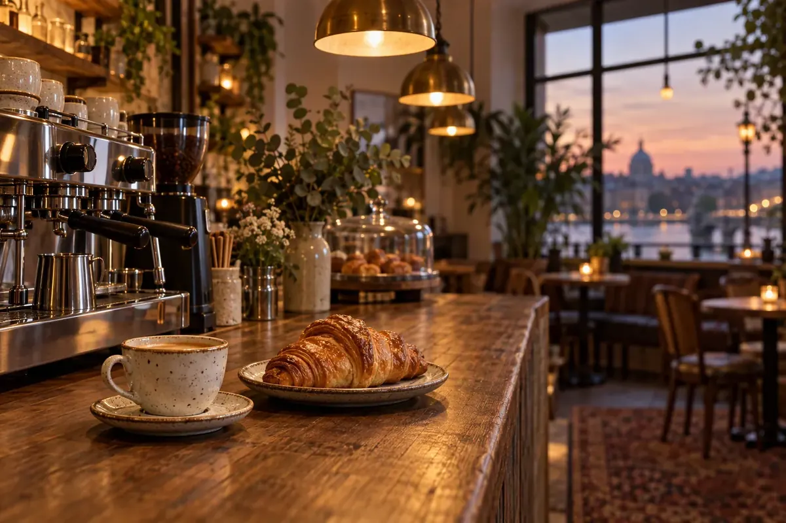
لحظتك تستاهلريحة قهوة طازة، مخبوزات دافية، ووقت صغير تفصل فيه عن الطريق. في لوبارنيز بنهتم بالتفاصيل اللي تخلي الاستراحة البسيطة ذكرى لطيفة في يومك.
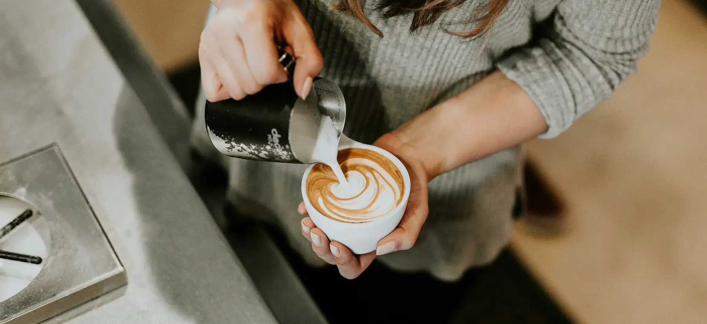
لوبارنيز كافيه هو وجهتك المميزة على الطرق. بنجمع بين القهوة عالية الجودة والمخبوزات والحلويات الطازجة، علشان نقدّم لك تجربة مريحة ولذيذة في كل محطة من رحلتك.
من أول رشفة لآخر لقمة، نهتم بالتفاصيل اللي تخلي وقفتك استراحة تستاهلها.
اكتشف فروعنامش بس قهوة تتشرب وتمشي؛ دي تجربة بسيطة معمولة علشان تريحك وتظبط يومك.
نهتم بطعم القهوة وتوازنها علشان كل كوب يبقى على مزاجك.
مخبوزات منتقاة وحلويات لذيذة ترافق قهوتك من غير تكلف.
تصميم الفروع بيخلي التوقف واضح وسهل في أثناء الرحلات.
تفاصيل دافئة، خدمة ودودة، ومكان تقدر تاخد فيه استراحة.
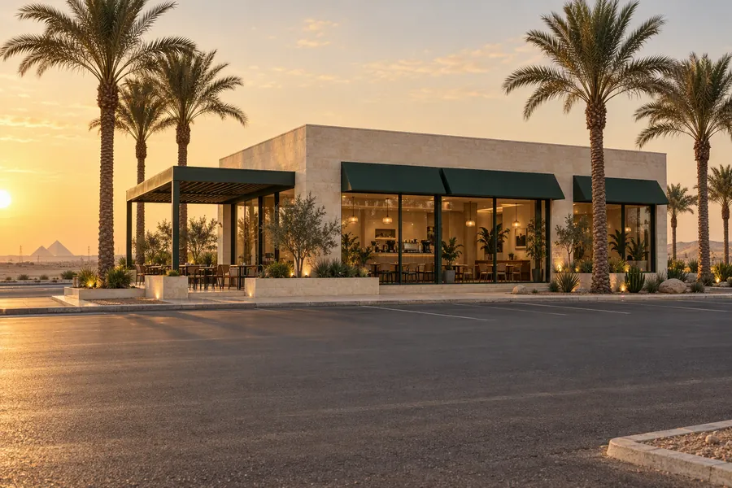
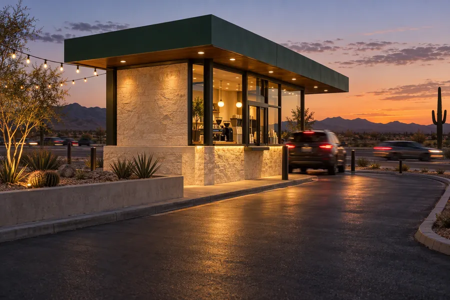
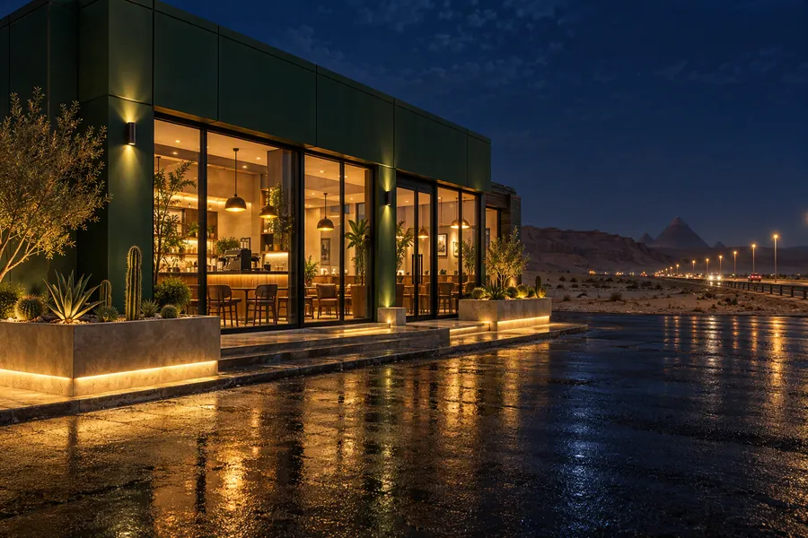
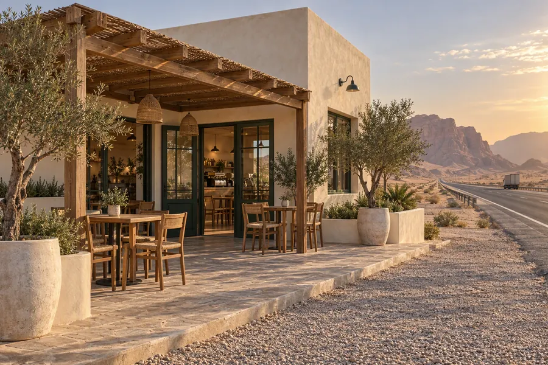
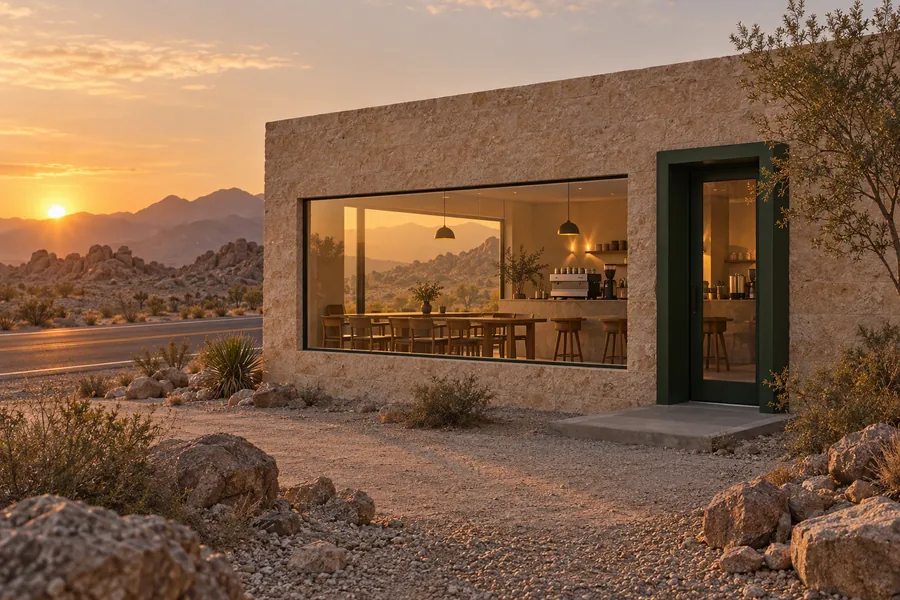
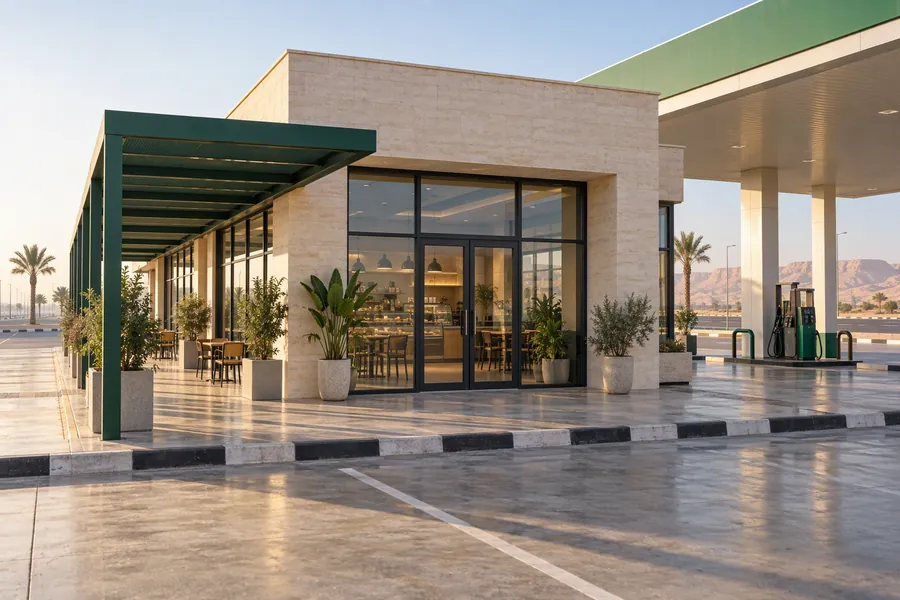
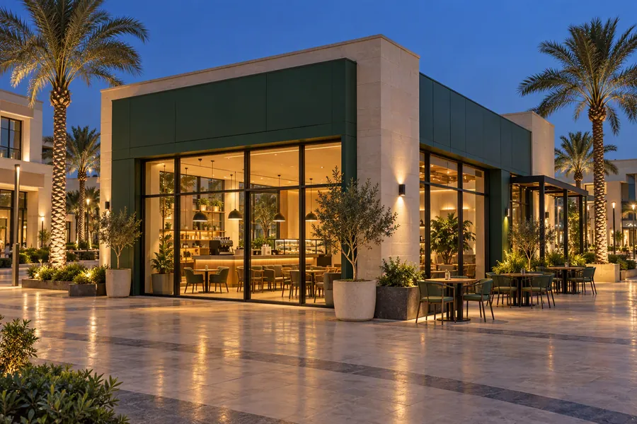
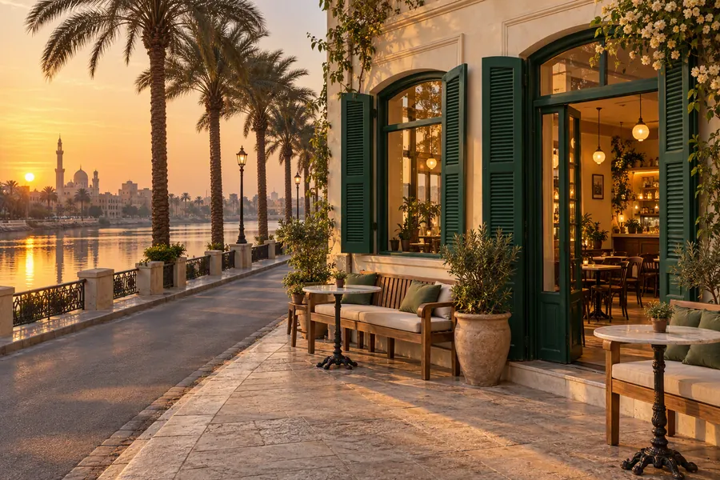
ملقيناش منطقة مطابقة، جرّب اسم طريق تاني.
من أول منظر الفنجان لحد ريحة المخبوزات، كل تفصيلة بتحكي حكاية.
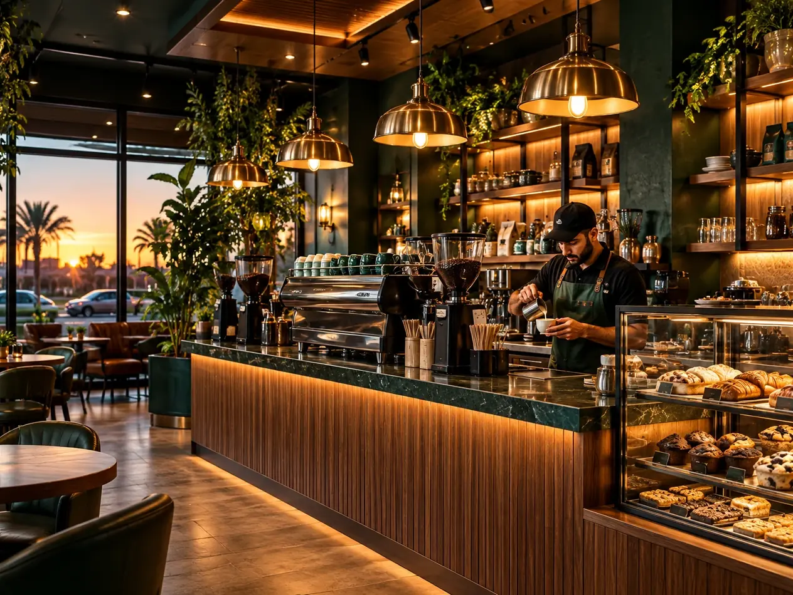
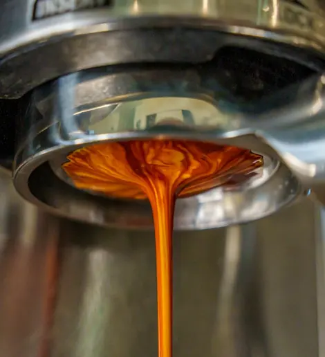
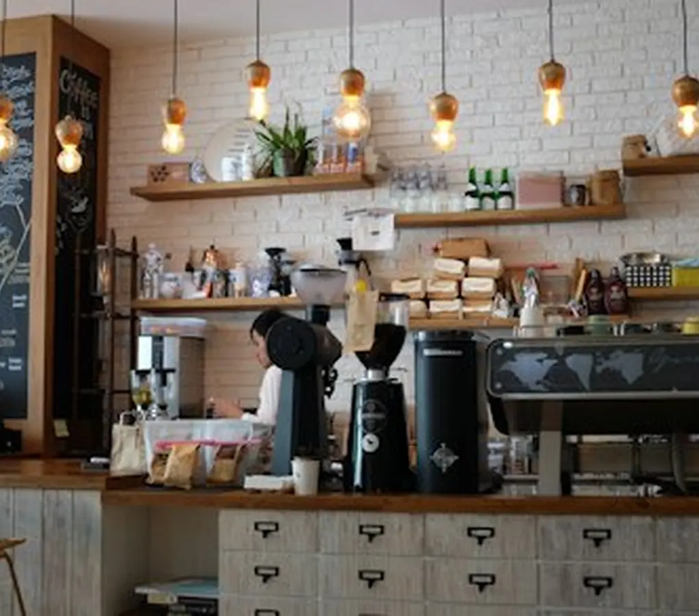
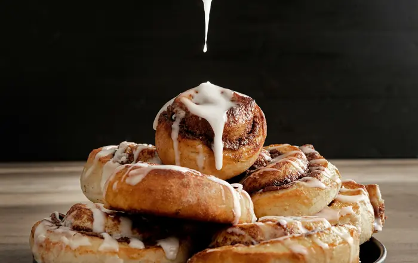
أكتر حاجات بيسألوا عنها — ولو عندك سؤال تاني كلمنا واتساب.
مفتوح ٢٤ ساعة طول أيام الأسبوع، في كل الفروع — من غير ساعة إغلاق.
٨ فروع على الطرق الرئيسية — اختار أقرب واحد من قسم «فروعنا» وافتحه على الخريطة.